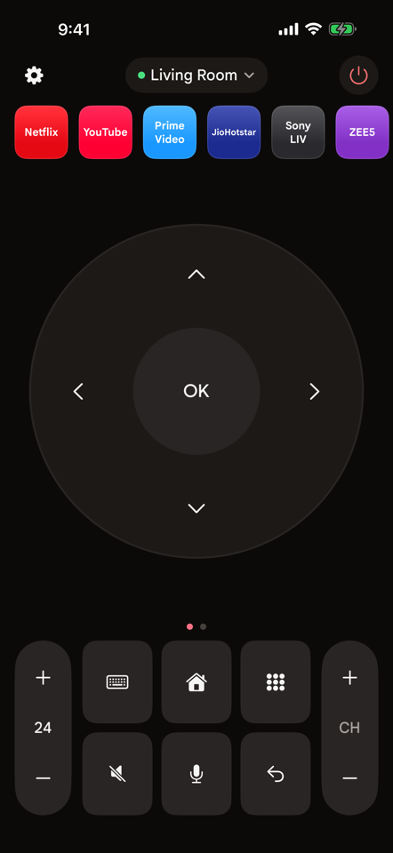
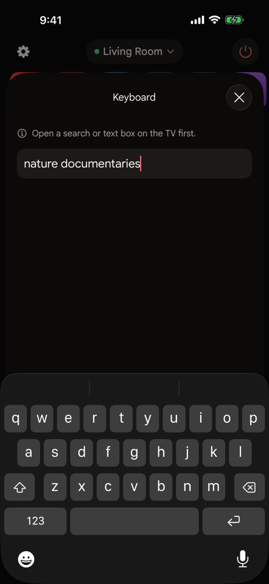
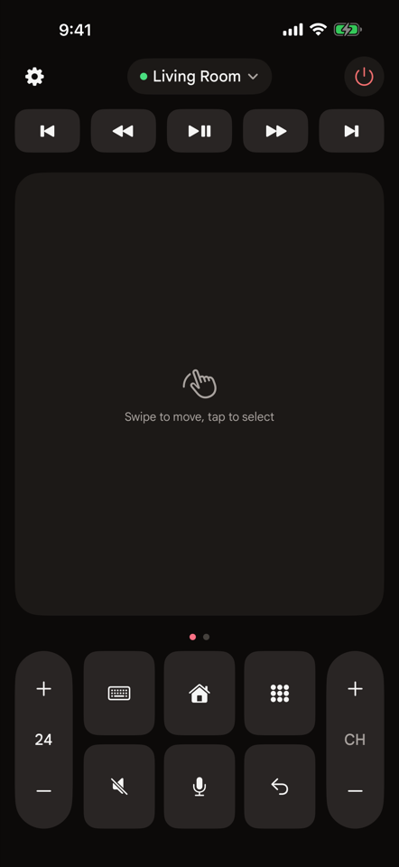
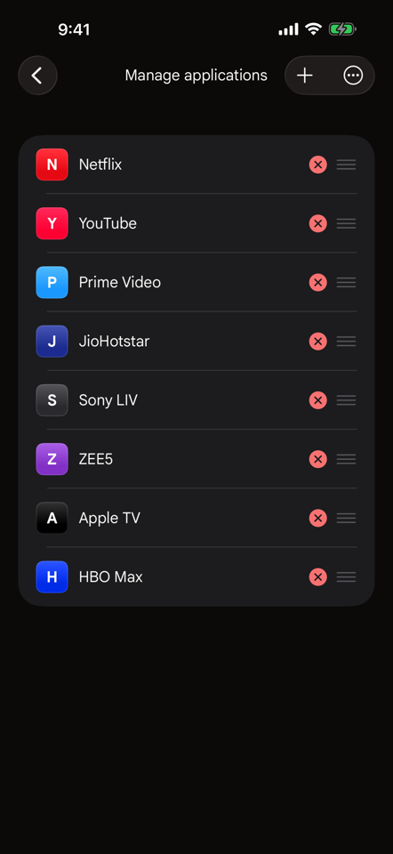
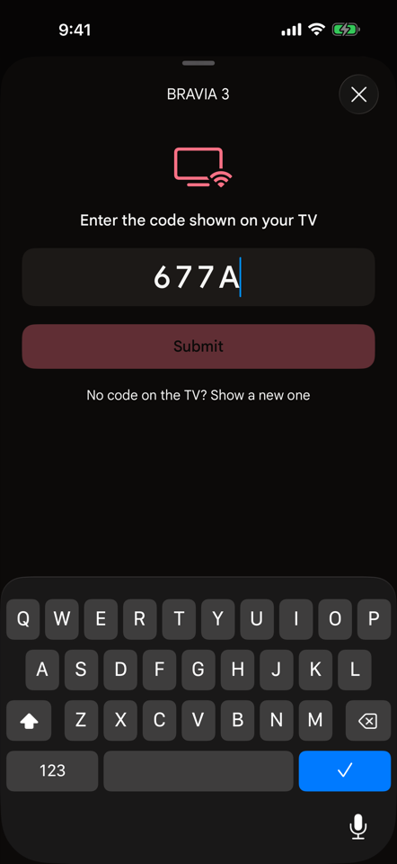

D-pad or touchpad
Tap arrows like a physical remote, or swipe on a touchpad. Hold volume, channel and arrows to repeat.
Type on the TV
Search with your iPhone keyboard. Letters appear on the TV as you type.
Your apps, one tap
Open Netflix, YouTube, Prime Video and more straight from the remote. Reorder or add the ones you use.
Every key you need
Volume with the TV's own level, mute, channels, home, back, number pad, colour and media keys, power.
Private by design
Couchpad talks only to TVs on your Wi-Fi. No account, no ads, no tracking; only anonymous crash reports leave your iPhone.
Free
No subscription and no limits.